ChatGPT, Gemini, Perplexity 모두 "Deep Research" 버튼을 단다. 질문 하나를 던지면 몇 분 동안 웹을 뒤지고, 수십 개 출처를 종합해 인용이 달린 보고서를 내놓는다. 그런데 같은 질문을 던져도 나에게 맞는 답은 사람마다 다르다. 의대생이 "최근 당뇨 치료 동향"을 물을 때와 갓 진단받은 환자가 같은 질문을 할 때, 좋은 보고서는 같을 수 없다.
이 글은 두 갈래를 정리한다. 먼저 Deep Research(DR)라는 분야가 정확히 무엇을 하는 것인지 — 입출력 과정, 목적 task, RAG와의 차이 — 를 서베이로 단단히 깔고, 그 위에서 personalization(개인화)이 어떻게 secondary 과제에서 핵심 연구 방향으로 떠오르는지를 5편의 논문으로 따라간다.
- Deep Research: A Survey of Autonomous Research Agents (arXiv:2508.12752) — DR 분야 정의 (Part 0)
- Toward Personalized LLM-Powered Agents (arXiv:2602.22680) — 개인화 에이전트 서베이 (4-capability 프레임)
- Towards Personalized Deep Research: Benchmarks and Evaluations (arXiv:2509.25106) — PDR-Bench
- Language Models Don't Know What You Want (arXiv:2603.16120) — MyScholarQA, real user의 필요성
- O-Mem (arXiv:2511.13593) — 개인화를 위한 memory 시스템
Part 0 — Deep Research란 무엇인가
서베이 Deep Research: A Survey of Autonomous Research Agents는 DR을 이렇게 정의한다. agent가 단순히 검색 결과를 받아 적는 게 아니라, planning·retrieval·synthesis를 능동적으로 수행해 web 근거에 기반한 comprehensive하고 faithful한 분석 보고서를 생성하는 패러다임이다.
"agents actively engage in planning, retrieval, and synthesis to generate comprehensive and faithful analytical reports grounded in web-based evidence."
입력과 출력
구조는 단순하다. 입력은 high-level research question 하나(q₀). 출력은 여러 출처를 종합한 multi-section 분석 리포트 — 인용이 달리고, 논리적으로 구성된 긴 글이다. "도쿄의 1월 평균 기온"처럼 한 줄로 끝나는 답이 아니라, "전기차 배터리 공급망의 지정학적 리스크" 같은 질문에 대한 보고서가 나온다.
4단계 파이프라인
서베이는 DR을 네 단계로 분해한다.

- Planning — 추상적인
q₀를 풀 수 있는 sub-goal 시퀀스[s₁, …, sₙ]로 분해한다. 무엇을, 어떤 순서로 찾을지를 결정. 형식적으로P = M^plan(q₀, K; θ). - Question Developing — 각 subgoal을 실제 검색 query 집합
Q_i로 변환한다. 여기서 RL이 많이 쓰인다 — format 정확도, answer accuracy, information gain을 reward로. - Web Exploration — query를 실행해 문서를 모은다. browser-based(WebGPT, WebVoyager처럼 실제로 페이지를 누비는 방식)와 API-based(Bing·Google 검색 API) 두 갈래.
- Report Generation — 모은 evidence를 구조화된 보고서로 합성한다. structure control(섹션 구성)과 factual integrity(출처와의 일관성, 출처 간 conflict 해소)가 두 축.
핵심은 이게 한 방향 파이프라인이 아니라는 점이다. 탐색 중 정보가 부족하면 다시 planning으로 돌아가는 iterative loop다.
RAG·single-turn QA와 무엇이 다른가
서베이는 RAG가 모델을 "passively consume retrieved content"하는 데 가둔다고 지적한다. DR은 반대로 외부 지식과 "active, goal-driven interaction"을 한다. single-turn QA가 고립된 질문 하나에 답한다면, DR은 multi-stage decomposition을 거쳐 여러 출처를 종합한 long-form 출력을 만든다. 목적 task도 그래서 다르다 — 여러 단계의 웹 탐색과 종합을 요구하는 벤치마크들이 쓰인다. 서베이는 이들을 4단계 파이프라인 커버리지로 정리한다.
| Benchmark | P | QD | WE | RG | 주요 지표 |
|---|---|---|---|---|---|
| DeepResearch Bench | ✓ | ✓ | ✓ | ✓ | Pairwise Agreement, Pearson Corr. |
| DeepResearchGym | ✓ | ✓ | ✓ | ✓ | KPR/KPC, Precision/Recall, Insight |
| Mind2Web 2 | ✓ | ✓ | ✓ | — | Success Rate, Partial Completion |
| BrowseComp | ✓ | ✓ | ✓ | — | Accuracy, Calibration Error |
| GAIA | ✓ | ✓ | ✓ | — | Exact Match |
| WebArena | ✓ | ✓ | ✓ | — | Success Rate |
P = Planning · QD = Question Developing · WE = Web Exploration · RG = Report Generation. 출처: Deep Research Survey (arXiv:2508.12752), Table 5.
GAIA·BrowseComp·WebArena 같은 close-ended 벤치는 앞 세 단계(탐색)는 평가하지만 Report Generation(RG)은 거의 다루지 않는다. 긴 보고서의 품질을 재는 open-ended 벤치(DeepResearch Bench 등)는 여전히 희소하다 — 바로 Part 2의 PDR-Bench가 파고드는 빈칸이다.
그런데 personalization은?
여기서 이 글의 출발점이 나온다. 같은 서베이가 open challenge를 나열하면서 personalization을 콕 집어 지적한다.
"Existing methods lack persistent user modeling and dynamic adaptation, often treating personalization as secondary."
즉 현재 DR은 누가 묻든 같은 보고서를 낸다 — 사용자 모델링은 "persistent user modeling and dynamic adaptation"이 빠진 채 부차적인 것으로 취급된다. 서베이는 앞으로 "scalable, privacy-aware user models with continual learning"이 필요하다고 말하며 끝맺는다. 나머지 글은 바로 이 빈칸을 채우려는 연구들이고, 그래서 먼저 "개인화란 무엇인가"부터 짚는다.
Part 1 — 개인화란 무엇인가
DR 안의 personalization을 보기 전에, "LLM agent의 개인화" 자체를 정리한 서베이 Toward Personalized LLM-Powered Agents를 지도로 삼자. 이 서베이의 핵심 주장은 한 문장이다.
"personalization permeates the entire decision pipeline rather than remaining confined to surface-level generation."
개인화는 출력 문장의 말투를 바꾸는 surface 작업이 아니라, agent의 의사결정 파이프라인 전체에 스며들어야 한다는 것이다. 의대생용 보고서와 환자용 보고서는 말투만 다른 게 아니라, 무엇을 검색하고, 무엇을 기억하고, 어떻게 계획하는지가 다 달라야 한다.
왜 필요한가. 현실의 중요한 결정 — 차를 사거나, 투자를 하거나, 진로를 정하는 일 — 은 사용자의 needs·preference·budget·prior knowledge에 강하게 좌우된다. 이런 상황에서 "one-size-fits-all" 보고서는 불충분하다. 같은 "최근 당뇨 치료 동향" 질문이라도, 의대생에게는 mechanism·최신 RCT·논쟁점이 담긴 깊은 보고서가, 갓 진단받은 환자에게는 생활 관리·부작용·비용 중심의 실행 가능한 보고서가 "좋은 답"이다. 사용자를 모르는 시스템은 둘 중 하나(혹은 둘 다)에게 반드시 틀린 답을 준다.
무엇이 달라지는가 — 그리고 얼마나. 개인화를 붙이면 보고서의 말투만 바뀌는 게 아니라 information filtering(무엇을 포함/배제), reasoning strategy(어떤 관점으로 분석), recommendation(무엇을 권함) 셋이 다 바뀐다. 영향도는 측정된다 — Part 2의 PDR-Bench 실험에서 같은 시스템도 사용자 정보를 줄수록(Task Only < Task+Context < Task+Persona) 점수가 단조 증가하며, 특히 명시적 persona를 줬을 때 가장 크게 오른다. 즉 개인화는 "있으면 좋은" 장식이 아니라 출력 효용을 좌우하는 변수다.
무엇이 추가되는가 — 공짜가 아니다. 대신 시스템에는 부품이 더 붙는다 — 사용자를 표현하는 profile, 시간에 걸쳐 정보를 쌓는 memory, 그에 맞춰 계획을 바꾸는 planning, 결과를 사용자 효용에 맞게 다듬는 action. 그리고 이 부품들은 latency·compute·privacy 비용을 동반한다(개인화 깊이 ↔ 배포 비용의 trade-off). 그래서 "무엇을 얼마나 개인화할지"가 그 자체로 설계 문제가 된다.
그렇다면 그 "전체 파이프라인"은 구체적으로 어떤 컴포넌트로 나뉘고, 각 컴포넌트에서 무엇이 문제가 되는가? 이를 체계적으로 정리한 서베이가 바로 Part 2의 첫 논문이다. 여기서부터는 그 지도를 펼쳐 들고, 빈칸을 하나씩 채우는 논문들을 본다.
Part 2 — 논문별 상세
총 네 편을 본다. 첫 편(①)은 개인화 에이전트의 전체 프레임을 정의하는 논문이고, 나머지 세 편이 그 프레임의 빈칸을 채운다 — 순서에는 이유가 있다. 무언가를 개선하려면 먼저 측정해야 하고(②), 그 측정을 믿을 수 있어야 하며(③), 그 위에서 개인화를 실제로 가능하게 할 인프라(④)가 필요하다. 각 편은 (1) 무엇을 문제 삼는가 → (2) 무엇을 제안하는가 → (3) 어떤 흐름으로 푸는가 → (4) 결과 → (5) 한계 순으로 본다.
① Personalized LLM Agents — 개인화 에이전트 서베이
Toward Personalized LLM-Powered Agents: Foundations, Evaluation, and Future Directions · arXiv:2602.22680
문제의식. LLM은 passive text generator에서 reasoning·planning·tool use를 하는 general-purpose 시스템으로 진화했고, 그 위에서 personalized LLM-powered agents (PLAs) — 긴 호흡의 상호작용에서 개별 사용자에 적응하는 에이전트 — 가 등장한다. 문제는 이 개인화가 출력 말투를 바꾸는 수준에 머무르지 않는다는 점이다.
"For personalized LLM-powered agents, personalization extends beyond response style and operates across the full decision pipeline, influencing how agents infer user intent, preserve user-relevant information over time, generate personalized plans, and carry out actions."
그런데 기존 리뷰들은 user modeling, memory, planning 같은 isolated capability만 따로 다뤄 "fragmented"하다. 개인화 목표가 agent lifecycle 전체에 어떻게 전파되는지를 잇는 통합 관점이 없다. 이 논문은 그 빈자리를 메우는 capability-oriented, system-level 프레임을 제안한다.
제안 — 형식적 정의. 핵심은 개인화를 user-conditioned policy로 정의하는 것이다. 일반 에이전트가 환경 상태 s_t와 내부 상태 h_t로 행동을 고르는 π(a_t | s_t, h_t)라면, 개인화 에이전트는 사용자 선호 표현 p_u를 조건으로 더한다 — π(a_t | s_t, h_t, p_u). 반복 상호작용에서 user-centric 데이터 D_u를 모아 내부 선호 추정 p̂_u = p(D_u)를 갱신하고, user-aligned utility를 최대화하는 방향으로 행동한다. 즉 같은 task Q라도 사용자마다 다른 결과가 나오는 것이 개인화의 정의다.
제안 — 4개 상호의존 컴포넌트. 이 정의를 네 칸의 capability로 분해한다. 사용자 요청이 들어오면 에이전트는 §3 Profile → §4 Memory → §5 Planning → §6 Action 순으로 조율해 맞춤 응답을 내고, 그 outcome·feedback이 다시 사용자 표현을 갱신하는 closed loop를 돈다.
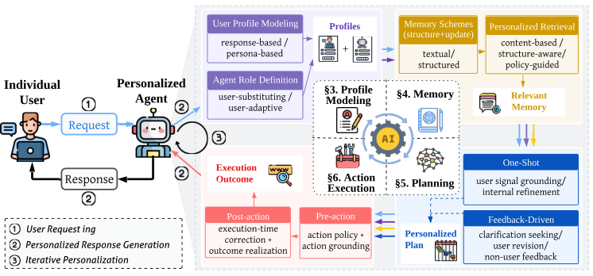
네 capability는 입력·시간 범위·목적이 모두 다르다.
| Capability | 주요 입력 | 시간 범위 | 목적 |
|---|---|---|---|
| Profile Modeling | user 속성·행동 이력·지시 | Lifelong | 사용자 이해 + agent–user alignment |
| Memory | interaction 이력·user event·맥락 기록 | Turn → lifelong | temporal continuity·일관된 개인화 |
| Planning | profile·memory·task 맥락·in-task feedback | Turn → task | 개인화된 reasoning·decision |
| Action Execution | plan·tool 상태·실행 feedback | Step → task | 개인화된 action·outcome 실현 |
각 컴포넌트는 다시 2~3개의 sub-paradigm으로 갈린다. 이 분류 체계(taxonomy)가 서베이의 뼈대다.
| 컴포넌트 | 축 | paradigm |
|---|---|---|
| §3 Profile | user profile modeling | persona-based / response-based |
| agent role definition | user-substituting / user-adaptive | |
| §4 Memory | structure | textual / structured(vector·tree·graph) |
| update | similarity-driven / inference-guided | |
| retrieval | content-based / structure-aware / policy-guided | |
| §5 Planning | one-shot | signal grounding(profile·memory conditioning / preference induction) / internal refinement |
| feedback-driven | clarification seeking / user revision / non-user feedback | |
| §6 Action | pre-action | action policy / action grounding |
| post-action | execution-time correction / outcome realization |
§3 Profile Modeling — "이 사람은 누구, 그리고 나는 누구." 일반 에이전트의 profile이 에이전트 자신(역할·전문성)을 정의했다면, PLA의 profile은 user-centered다. 두 축으로 나뉜다. user profile modeling은 persona-based(안정적 traits·선호를 구조화 벡터나 NL 요약으로; 예 AlignXpert는 심리·정렬 차원의 고차원 선호 공간, FSPO는 user-description CoT)와 response-based(후보 출력에 대한 평가로 선호를 포착; shared reward feature + user-specific weight로 sparse 데이터에서도 빠르게 적응 — RFM·PReF·LoRe)로 갈린다. agent role definition은 user-substituting(사용자를 대신/시뮬레이션)과 user-adaptive(상호작용 중 persona·tone·자율성을 조정 — LD-Agent, PersonaAgent)로 갈린다. profile은 개인화의 foundational layer — 이후 memory·planning·action이 모두 여기 딛고 선다.
§4 Memory — "무엇을, 어떻게 쌓고 꺼내는가." (← ④ O-Mem이 정확히 이 칸의 논문) personal memory는 internal(파라미터·KV cache; compact하나 갱신 어려움) vs external(RAG 기반; 유연)로 나뉘고, 서베이는 long-term external memory에 집중한다. 세 갈래다.
- structure — textual(NL 요약; topic-consistent segmentation이 관건 — SeCom·Nemori)과 structured(vector / hierarchical tree[RAPTOR] / graph[AriGraph·Zep]). graph는 표현력은 크나 LLM 추출 비용이 크다.
- update — similarity-driven(의미 유사도로 merge/revise; Mem0의
ADD/UPDATE/DELETE/NOOP)과 inference-guided(추론으로 선호 변화를 반영; Nemori의 Predict–Calibrate). - retrieval — content-based(의미 유사도), structure-aware(graph·hierarchy 관계; Personalized PageRank), policy-guided(user·task 조건 정책이 query 변환·도구 선택까지 결정 — UniMS-RAG).
여기서 O-Mem(④)의 문제의식이 곧장 나온다 — 대부분 retrieval 전에 semantic grouping을 해버려 결정적 정보를 놓친다는 비판이 바로 이 retrieval 축에 대한 반론이다.
§5 Planning — "사용자에 맞춰 어떻게 계획하는가." (← ③ MyScholarQA가 이 칸) 두 paradigm. one-shot(한 번에 계획)은 user signal grounding(profile·memory conditioning, 또는 sparse 신호에서 제약·목표를 유도하는 preference induction)과 internal refinement(생성한 plan을 self-critique로 수정)로; feedback-driven(상호작용으로 점진 개선)은 clarification seeking(언제 물을지를 가치-비용으로 결정 — SAGE-Agent는 POMDP), user revision(편집을 고품질 신호로), non-user feedback(agent·환경 매개)으로 나뉜다. trade-off가 분명하다 — one-shot은 빠르고 일관되나 sparse 신호에 취약, feedback-driven은 정렬은 좋아지나 latency·user 부담이 늘어난다. MyScholarQA의 "제안 → 승인" 루프가 바로 feedback-driven의 clarification·user revision을 구현한 사례다.
§6 Action Execution — "결정을 실제 동작으로." 개인화가 내부 추론에 머물지 않고 실현되는 지점. pre-action(action policy: 유효한 실행지들 중 선호 기반 선택 — PEToolLLaMA의 personalized tool learning; action grounding: user-specific 인자로 instantiate, 불가능하면 가장 덜 선호하는 제약부터 완화)과 post-action(execution-time correction: 실패 신호로 재계획 없이 보정; outcome realization: personalized re-ranking 등으로 결과를 사용자 효용에 맞춰 제시)로 나뉜다. 서베이도 인정하듯 이 단계는 연구가 가장 적다.
무엇이 흐르는가 — user-centric data & 선호 taxonomy. 이 네 컴포넌트를 관통하는 신호는 두 timescale로 나뉜다.
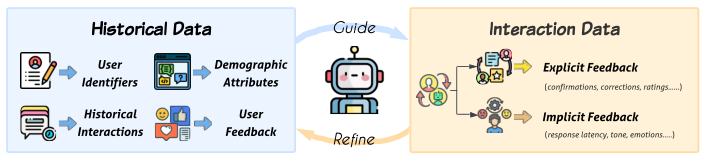
선호 자체는 2D taxonomy로 정리된다 — expression(explicit 직접 명시 / implicit 행동에서 추론) × semantic(behavioral 말투·추론 스타일, task에 안정적 / topical 도메인 관심·입장, 맥락에 따라 변동). 저녁 메뉴 추천 대화 하나로 네 사분면이 다 나온다.
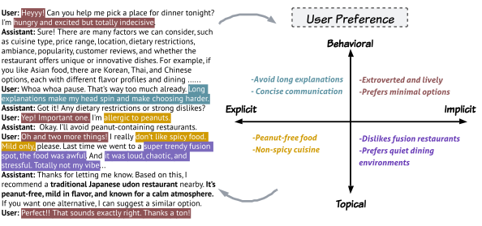
어떻게 평가하는가. 서베이는 개인화 평가를 세 층으로 정리한다.
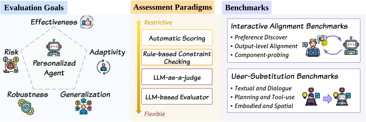
여기서 서베이 스스로 경고한다 — synthetic user·LLM-as-judge는 reliability와 human satisfaction과의 정렬에 의문이 있어, human-in-the-loop·longitudinal 평가가 필요하다. 이 경고를 실증한 것이 바로 ③ MyScholarQA다.
결과·진단. 이 논문의 기여는 새 모델이 아니라 이 통합 프레임(형식 정의 + 4-capability taxonomy + 평가 체계) 자체다. 진단은 날카롭다 — 현실의 방법들은 대부분 한두 capability에만 집중하고, 컴포넌트들을 "typically developed in isolation, with limited mechanisms for mutual adjustment", 즉 따로따로 만든다.
한계·미해결 과제. 논문이 직접 던지는 open problem 여섯 가지가 곧 분야의 숙제다 — (1) decision-critical user modeling(어떤 user 속성이 이 결정에 중요한지 구분), (2) temporal dynamics(선호가 변함 → catastrophic forgetting 없는 continual personalization), (3) generalization(sparse·unseen user, cross-domain 전이), (4) evaluation(synthetic user·LLM-as-judge의 신뢰성 한계 → human-in-the-loop·longitudinal), (5) privacy & user control, (6) efficiency(개인화 깊이 vs 배포 비용). 이 빈칸들을 실제로 파고드는 것이 다음 세 편이다 — (4) 평가가 ②·③, memory가 ④의 주제다.
② PDR-Bench — 개인화 DR을 측정하는 벤치마크
Towards Personalized Deep Research: Benchmarks and Evaluations · arXiv:2509.25106
문제의식. 저자들은 DRA의 잠재력을 먼저 인정하며 연다 — "Deep Research Agents (DRAs) can autonomously conduct complex investigations and generate comprehensive reports, demonstrating strong real-world potential." 문제는 그 다음이다. Part 0에서 봤듯 DR 벤치는 대부분 close-ended(정답이 하나)고, 보고서 같은 open-ended 출력 — 그중에서도 개인화 — 는 사각지대다.
"existing evaluations mostly rely on close-ended benchmarks, while open-ended deep research benchmarks remain scarce and typically neglect personalized scenarios."
왜 이게 중요한가? 논문은 구체적 예시를 든다 — 차를 고르거나 투자를 결정하는 일은 사용자의 needs·preference·budget·prior knowledge에 강하게 좌우된다. 이런 상황에서 "one-size-fits-all" 보고서는 불충분하다. 그런데 기존 DR 벤치(GAIA·BrowseComp·HLE, 그리고 open-ended인 DeepResearch Bench·ResearcherBench·DeepResearchGym)는 factual accuracy·comprehensiveness만 보고 user adaptation은 평가하지 않으며, 반대로 기존 개인화 벤치(LaMP·PersonaGym·PersonaLens 등)는 dialogue·recommendation 같은 좁은 도메인에 갇혀 deep research의 iterative retrieval·multi-step reasoning을 못 담는다. 이 논문은 스스로를 "the first to systematically incorporate personalization into the evaluation of DRAs"라고 표방한다.
제안. 세 가지를 내놓는다. (1) personalized deep research라는 task를 형식적으로 정의 — DRA가 retrieval·reasoning·reporting을 user persona에 맞춰 적응시켜야 한다. (2) PDR-Bench 벤치. (3) PQR 평가 프레임워크. 그리고 open-source DRA·commercial DR·LLM+search·memory system을 폭넓게 실험한다.
흐름 ① — 벤치 구성(3단계). 먼저 데이터를 만든다.
- Task 50개 — 10개 도메인(Career, Education, Healthcare, Financial Planning 등) × 도메인당 5개. travel blogger·financial advisor·educational consultant 같은 도메인 전문가가 초안을 짜고, 석·박사 연구자·data scientist·PM 위원회가 세 원칙으로 검증 — Complexity(multi-step reasoning 요구), Clarity(모호함 없음), Alignment(개인화 시나리오에 부합). 한·영 병렬 세트.
- 실제 user profile 25개 — 합성이 아니다. 25명 volunteer가 표준 교육 후 persona schema(인구통계·선호·습관·재정)에 진짜 정보를 매핑해 explicit persona
Ps를 만들고, 별도로 Xiaobu Memory 앱에서 일상(여행 계획·건강 목표·가족 계획)을 기록·대화하게 해 dynamic contextPc(암묵 선호)를 수집한다. 완전한 프로필 =(Ps, Pc)쌍. - 250개 query — 무작위 짝이 아니라 user-driven, committee-guided 매칭. 각 volunteer가 자기 관심·필요에 맞는 task를 고르고(부모 volunteer는 "자녀 교육"), 위원회가 task당 user 5명을 다양성·정합성 기준으로 큐레이션 → 50 task × 5 user = 250 instance.
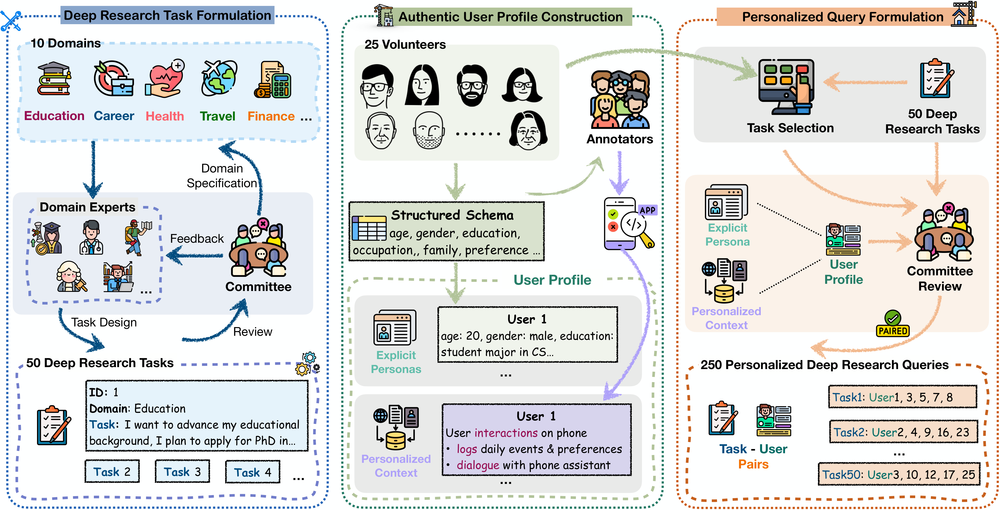
흐름 ② — PQR 평가. 핵심 질문은 셋이다 — "이 보고서가 나를 위한 것인가?"(P) · "잘 쓰였는가?"(Q) · "내용이 사실인가?"(R). 기존 평가가 Q·R만 보던 것을 P까지 합친 것이 PQR다.
| 축 | 측정하는 것 | 세부 차원 |
|---|---|---|
| P — Personalization | 사용자에게 맞는가 | Goal / Content / Presentation Fit / Actionability |
| Q — Quality | 보고서 자체가 좋은가 | Depth & Insight / Logical Coherence / Clarity |
| R — Reliability | 사실에 충실한가 | Factual Accuracy + Citation Coverage |
P와 Q는 고정 기준이 아니라 동적 채점이다. LLM이 3단계로 움직인다 — (1) task·persona를 보고 네(P)/세(Q) 차원의 dynamic weight w_d를 할당(합=1), (2) 각 차원마다 task·persona에 맞는 granular sub-criteria C_d를 생성, (3) 별도 LLM scorer가 보고서를 각 sub-criterion에 대해 0–10으로 채점 + 근거 서술. 최종 점수는 sub-criterion → 차원 → 전체로 가중 평균(S_P = Σ w_d (Σ w_{c_i} s_{c_i})). 즉 같은 보고서라도 누구를 위한 것이냐에 따라 채점 기준 자체가 달라진다.
R은 자동 검증이다. Judge LLM이 보고서에서 검증 가능한 claim과 출처를 (claim, idx, source) triplet으로 추출·deduplicate한 뒤, Jina Reader API로 출처 본문을 가져와 claim이 지지되는지 이진 판정한다. 두 지표 — Factual Accuracy FA = (지지된 cited claim 수 / cited claim 수) × 10, Citation Coverage CC = (cited claim 수 / 전체 claim 수) × 10 — 의 평균이 S_R. 최종 점수 Overall = (P + Q + R) / 3.
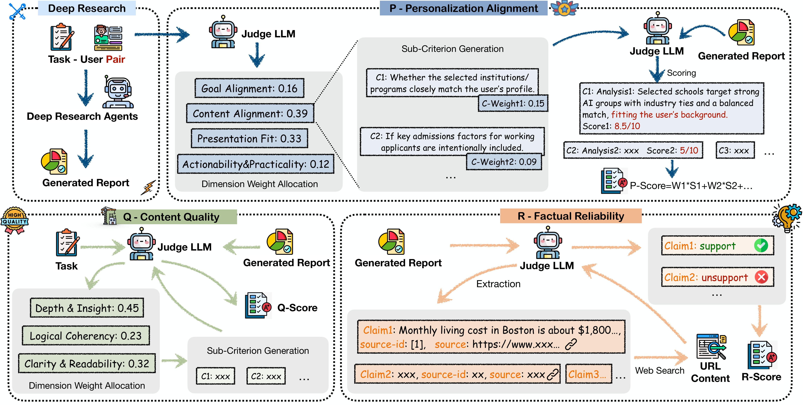
결과. 흥미로운 분화가 보인다.
| 시스템 유형 | 강점 | 대표 수치 |
|---|---|---|
| Open-source agent (OAgents) | personalization 최고 | P = 6.64 |
| Commercial (Gemini-2.5-Pro DR) | quality·reliability 균형 | FA 8.40 / CC 9.26 |
| LLM + Search (GPT-4.1) | 전반 부진 | CC 0.10 |
그리고 정보 가용성 실험이 결정적이다 — 같은 시스템도 Task Only < Task w/Context < Task w/Persona 순으로 점수가 오른다. 즉 explicit persona가 implicit context보다 훨씬 강하다. 단서를 흘리는 것보다 명시적으로 "나는 이런 사람"이라고 알려주는 게 낫다는 것. 한편 memory system(O-Mem)을 붙여본 결과는 가능성은 보였지만 persona를 직접 주는 baseline과는 여전히 gap이 컸다.
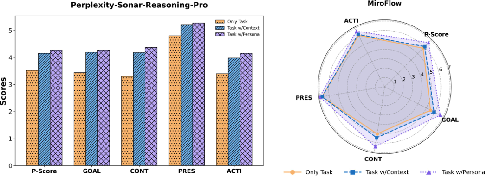
한계. persona·context 수집이 중국어 중심이라 English 병렬본도 문화적으로 제약된다. 예산상 250개 중 150개 query만 본 실험에 썼다. memory system은 아직 content alignment까지만 가능.
③ MyScholarQA — LLM 평가의 한계와 real user
Language Models Don't Know What You Want: Evaluating Personalization in Deep Research Needs Real Users · arXiv:2603.16120
문제의식. PDR-Bench는 LLM judge로 채점했다. 그런데 Language Models Don't Know What You Want는 한 발 물러서서 묻는다 — LLM judge가 매긴 점수를 믿어도 되는가? 이들의 답은 단호하다.
개인화의 진짜 진전은 실제 사용자 없이는 불가능하다.
배경. DR 시스템은 폭증하는 논문을 다루도록 돕지만 "lack understanding of their users" — 사용자를 모른다. MyScholarQA(MYSQA)는 과학 논문을 종합해 답하는 개인화 DR 에이전트로, 세 단계로 작동한다.
- profile 추론 — 사용자가 고른 "관심 논문 5편"(직접 썼거나, 쓰고 싶었거나, 영감을 준 논문)에서 연구 관심사를 담은 편집 가능한 profile을 유추한다. 별도 질문 없이 낮은 노력으로 nuanced한 선호를 끌어낸다.
- action 제안 — 입력 query에 맞춰 편집 가능한 personalized action 목록(어떤 방향으로 조사할지)을 제시한다. follow-up 질문에 답하는 것보다 고르는 게 쉽다.
- report 작성 — user가 승인한 action을 따라 multi-section report를 쓰고, highlight로 각 action이 어디서 반영됐는지 보여준다.
이것이 Part 1 ①의 feedback-driven planning(clarification → user revision)을 그대로 구현한 것이다 — 한 user의 말처럼 "want [the] system to know about me once then act accordingly."
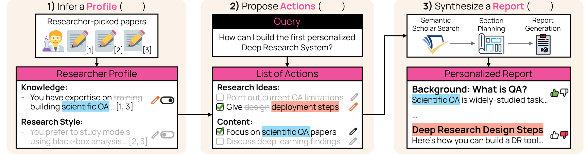
흐름 — 2단계 평가, 그리고 반전. 핵심은 같은 시스템을 두 방식으로 평가한 데 있다.
- (오프라인) NLP 표준 프로토콜 — synthetic user + LLM judge로 만든 벤치에서 MYSQA는 citation 지표와 personalized action-following에서 baseline을 이긴다. 성공처럼 보인다.
- (온라인) real user 연구 — 그러나 active DR user 21명(시급 $30–40, 19명이 OpenAI DR 사용)을 90분씩 인터뷰하니 그림이 뒤집힌다. 사용자는 profile·action·report의 73%를 좋아했지만, 나머지 27%를 정성 코딩하자 LLM judge가 전혀 못 잡은 nine nuanced errors가 드러났다.
"We reveal nine nuanced errors of personalized DR undetectable by our LLM judges."
| 단계 | 오류 (코드) | 설명 | 빈도 |
|---|---|---|---|
| Profile | DOMAIN | 사용자의 연구 도메인을 못 잡는 용어·정의 사용 | 27.6% |
| OVERCLAIM | 일부 논문에만 맞는 걸 사용자 전반에 적용 | 17.9% | |
| CONVENTION | 분야의 generic 관습을 사용자 특성인 양 추론 | 12.8% | |
| CONTRAST | "너는 X지 Y 아니다"인데 실제로는 Y | 12.2% | |
| Action | NARROW | action이 너무 구체적이라 정보 범위를 과하게 제약 | 43.8% |
| OFFTOPIC | query에서 벗어나 사용자 의도를 흩뜨림 | 23.6% | |
| Report | UNINFORM | 너무 vague·high-level이라 정보가 부족 | 38.0% |
| PRESENT | 원하는 형식·스타일(예: bullet)과 다름 | 25.3% | |
| IGNORE | action의 명시·암묵 요구를 무시 | 22.8% |
결정적으로, 저자들이 이 차원들을 LLM judge로 재현해보려 하자 — 네 종류의 judge 모두 사용자 만족을 majority-class baseline 수준으로밖에 예측 못 했다. 10개 넘는 합리적 지표를 동원해도 못 잡는다는 것.
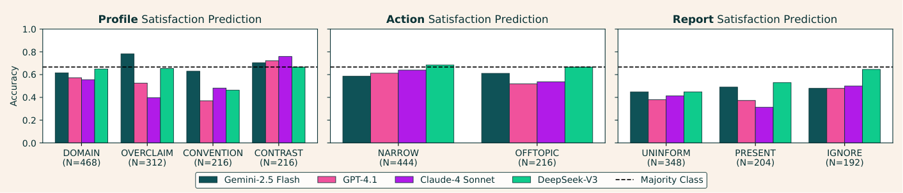
4 lessons. 인터뷰에서 future design 교훈도 나온다 — (1) control vs effort 균형: DR은 몇 분이 걸리니 user는 앞단에 더 노력할 의향이 있다. 단 follow-up 질문은 싫어하고(매번 needs를 다시 말해야 함), persistent profile + action 고르기를 선호. (2) 개인화를 소화하기 쉽게: profile/action 2단계 구조와 report highlight가 needs 조직·skim을 도왔다. (3) 논문 너머로: profile 신호를 논문뿐 아니라 active project·과거 query로; report에 code·LaTeX·표·시각화 같은 modality도. (4) 평가는 one-size-fits-all이 아니다: 오프라인 지표(scalable한 baseline 품질 점검) + 온라인(놓친 것 발견) + longitudinal·behavioral signal을 섞어 써야 한다.
한계. 저자들도 인정한다 — online study도 완벽한 해법은 아니다. action 편집은 user가 원하는 것뿐 아니라 시스템이 할 수 있다고 믿는 것도 반영하고(U6은 "기본기를 이해했는지" 확인 전까지 복잡한 action을 건너뜀), 효용 예측도 어렵다. 그래서 mixed evaluation(정성·정량·종단)을 권한다. real user 연구 자체가 소규모·고비용인 점, nine errors가 학술 검색 도메인에 특화됐을 수 있는 점도 한계다.
④ O-Mem — 개인화를 위한 memory 시스템
O-Mem: Omni Memory System for Personalized, Long Horizon, Self-Evolving Agents · arXiv:2511.13593
연결. ②·③이 측정하고 평가하는 문제였다면, ④는 그 측정 대상인 개인화를 실제로 가능하게 하는 쪽이다. 그리고 정확히 ①에서 본 지도의 Memory 칸을 채운다.
문제의식. 개인화가 한 번의 대화로 끝나지 않고 시간에 걸쳐 이뤄지려면, 사용자에 대한 정보를 쌓고 꺼내 쓰는 memory가 필요하다. O-Mem은 기존 memory의 약점을 한 문장으로 짚는다.
"Existing memory systems often depend on semantic grouping prior to retrieval, which can overlook semantically irrelevant yet critical user information and introduce retrieval noise."
retrieval 전에 의미로 미리 묶어버리니, 의미상 동떨어졌지만 결정적인 user 정보를 놓치고 noise가 낀다는 것. 결국 long-term contextual consistency가 약해진다. 그래서 O-Mem은 "hierarchical retrieval of persona attributes and topic-related context"로 방향을 튼다.
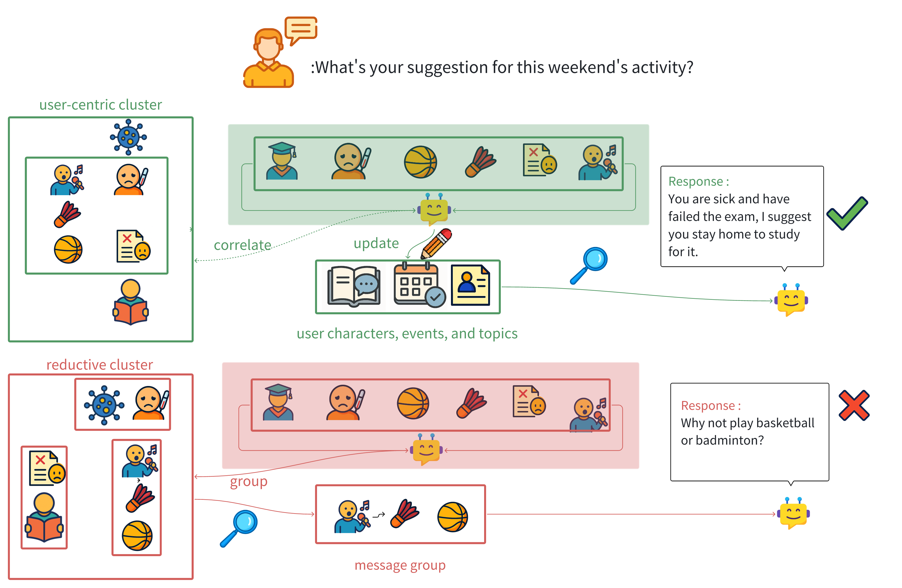
제안·흐름. 핵심은 active user profiling이다. 매 interaction마다 LLM이 세 가지를 추출·갱신한다.
- Persona attributes — 사용자 특성. nearest-neighbor graph로 clustering.
- Persona fact events — 중요한 경험·사건. Add / Ignore / Update 연산으로 관리.
- Topics & keywords — retrieval용 자동 인덱싱.
그리고 세 종류의 memory를 두고 병렬로 한 번에 검색한다 (sequential이 아니라 one-time concurrent retrieval).
| memory 종류 | 역할 | 키 |
|---|---|---|
| Persona Memory | 장기 사용자 프로필 | attributes + fact events |
| Working Memory | 대화 일관성 | topic → interactions |
| Episodic Memory | 단서로 떠올리는 연상 회상 | keyword → interactions |
결과.
| 벤치마크 | O-Mem | 이전 SOTA |
|---|---|---|
| LoCoMo (F1) | 51.67 | 48.72 (LangMem) |
| PERSONAMEM | 62.99 | 59.42 (A-Mem) |
게다가 LangMem 대비 token 94% 절감, latency 80% 단축. 정확도와 효율을 동시에 잡았다.
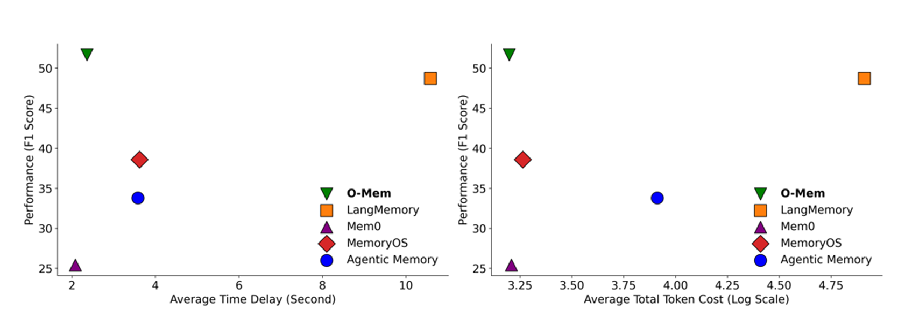
한계. 저자들이 솔직히 인정하는 부분 — full interaction history에 그냥 RAG를 돌려도 50.25 F1로 근접한다(51.67 대비). 개념적으로 훨씬 단순한 baseline이 비용만 더 쓸 뿐 성능은 비슷하다는 것은, memory 구조화의 이득이 효율에 더 크고 정확도에서는 아직 작다는 신호다. persona update도 LLM curation에 의존한다.
Part 3 — 전체 흐름과 논문별 요약
다섯 편을 한 줄에 꿰면 이렇게 된다.
흐름을 단계로 보면:
- 분야 정의 (서베이 2508.12752) — DR = planning·retrieval·synthesis로 grounded report를 만드는 4단계 파이프라인. 그러나 personalization은 secondary로 방치.
- 개인화의 프레임워크 (2602.22680) — 개인화는 출력 표면이 아니라 profile·memory·planning·action 전체에 걸친 closed loop(user-conditioned policy). 진단: 컴포넌트들이 따로 발전한다는 것. open problem 여섯 가지를 제시.
- 측정 (PDR-Bench) — 개인화 DR을 측정하는 첫 공용 benchmark(PQR). 발견: 시스템들은 explicit persona를 줘야 겨우 개인화한다.
- 평가 방법론 (MyScholarQA) — LLM judge는 사용자가 중시하는 차원(nine nuanced errors)을 majority-baseline 수준으로밖에 못 잡는다. real user가 필요하다.
- memory (O-Mem) — 시간에 걸친 개인화를 지원하는 active-profiling memory. 효율은 크게, 정확도는 아직 조금.
전체를 관통하는 한 가지 — 개인화는 자동 평가가 편하지만, 정교한 개인화일수록 자동 평가가 놓치는 부분이 많아진다. ①이 프레임을 세우고 그 안의 "evaluation"을 open problem으로 지목하면, ②(PDR-Bench)가 측정 도구를 만들고, ③(MyScholarQA)이 그 도구의 한계를 real user로 들춘다. 그리고 ④(O-Mem)가 이 모든 것이 딛고 설 memory 인프라를 다진다. 측정과 평가 방법론이 맞물리며 분야가 나아간다.
논문 한 줄 요약
| 논문 | 한 줄 요약 |
|---|---|
| Deep Research Survey 2508.12752 | DR을 planning→question developing→web exploration→report generation 4단계로 정의하고, personalization을 미해결 과제로 지목. |
| Personalized LLM Agents 2602.22680 | 개인화를 user-conditioned policy로 정의하고 profile·memory·planning·action 4컴포넌트의 closed loop로 정리한 프레임워크. 진단: 컴포넌트들이 따로 발전 중. open problem 6가지 제시. |
| PDR-Bench 2509.25106 | 50 task × 25 실제 profile로 만든 개인화 DR 첫 벤치. PQR(Personalization·Quality·Reliability)로 채점. explicit persona가 implicit context보다 강함. |
| MyScholarQA 2603.16120 | 관심 논문→profile→action 제안→승인→report 루프로 개인화하는 DR 시스템. LLM judge로는 이겼지만, real user 21명 인터뷰에서 judge가 못 잡은 nine nuanced errors 발견. |
| O-Mem 2511.13593 | active user profiling으로 persona/working/episodic memory를 병렬 검색. LoCoMo·PERSONAMEM SOTA, token 94%·latency 80% 절감. |
파이프라인 어디를 건드리나 — 단계별 분류
①의 4-capability 분류(+ 보고서 표현)를 자로 삼아, 각 논문이 파이프라인의 어느 칸을 개선하는지 정리하면 빈 칸이 한눈에 보인다. (✓ 메커니즘 제안 · ◐ 측정/평가만 · — 해당 없음)
| 논문 | Profile | Memory | Planning | Action | Report 표현 |
|---|---|---|---|---|---|
| Agent 서베이 (2602.22680) | ✓ | ✓ | ✓ | ✓ | ◐ |
| PDR-Bench (2509.25106) | ◐ | ◐ | ◐ | — | ◐ |
| MyScholarQA (2603.16120) | ✓ | — | ✓ | — | ✓ |
| O-Mem (2511.13593) | ✓ | ✓ | — | — | — |
읽히는 것 — 개선 메커니즘(✓)이 몰린 곳은 Profile·Memory고, Planning은 MyScholarQA(제안-승인)만, Action(검색·도구 실행)을 개인화하는 DR 연구는 사실상 없다. PDR-Bench는 전 구간을 측정하지만 어느 칸도 직접 개선하진 않는다(벤치마크라서). 즉 "이 사용자에겐 어떤 출처를 우선 검색할지"(Action/retrieval 개인화)와 "보고서를 어떤 형식·modality로 낼지"(Report 표현 개인화)가 가장 비어 있다.
개인화 신호는 어디서 와서 어디에 쓰이나
본문을 읽으며 가장 헷갈리는 두 질문 — 프로필 같은 메타데이터는 (a) 어디서 가져오고 (b) 어디에 적용되나? 논문별로 답이 다르다.
| 논문 | 데이터 출처 (어디서) | 적용 지점 (어디에) |
|---|---|---|
| PDR-Bench | 명시적 schema 설문(인구통계·선호·습관·재정) + 앱 사용 시뮬로 implicit context | 입력 query에 persona를 통째로 주입 → retrieval·reasoning·report 전체에 영향(단, 측정만) |
| MyScholarQA | 사용자가 고른 "관심 논문 5편"에서 추론 (설문 없음, 저노력) | Planning(action 제안) + Report(highlight·표현) |
| O-Mem | 상호작용에서 능동 추출(attribute·event·topic), 지속 갱신 | Memory retrieval → 생성 시 conditioning |
(a) 출처 — 설문은 비현실적이라는 게 중론. 세 패턴이다 — ① 명시적 설문/schema(PDR-Bench: 정확하나 무겁고, 실제 제품이 매번 받기 어렵다 — 벤치 구성용 artifact에 가깝다), ② artifact에서 추론(MyScholarQA: "관심 논문 5편"만 받아 저노력으로 프로필 유추), ③ 상호작용에서 수동 추출(O-Mem). MyScholarQA의 인터뷰에서 사용자는 "한 번만 알려주면 알아서 해줘"를 원하고 매 질문마다 다시 설명하는 follow-up을 싫어했다 — 무거운 설문보다 추론·수동 수집으로 가는 흐름.
(b) 적용 — 대부분 "입력 주입" 아니면 "report 단계". PDR-Bench는 persona를 input에 넣고 끝(전 구간에 흘러가지만 통제는 없음), MyScholarQA는 planning·report에 명시 적용, O-Mem은 retrieval 시 conditioning. 검색(retrieval) 단계에서 "이 사람에 맞는 출처를 고르는" 개인화는 거의 비어 있다 — 위 분류표의 Action 칸이 빈 것과 같은 얘기다.
Part 4 — 열린 질문과 연구 방향
여기까지가 다섯 편의 정리다. 이제 이 글을 쓰며 떠오른 질문들 — 그리고 직접 파고들 만한 빈 칸 — 을 모은다. (아래 인용하는 추가 논문들은 분야 지형을 잡기 위한 것으로, 핵심 5편과 달리 abstract 수준으로 확인했다.)
① "개인화"의 범주가 논문마다 다르다
같은 personalization이라는 단어가 적용 범위에서 크게 다르다.
| 논문 / 분야 | 개인화 scope | 개인화 신호로 보는 것 |
|---|---|---|
| Agent 서베이 (2602.22680) | 전체 lifecycle — profile·memory·planning·action closed loop | historical + interaction data 전부 (behavioral·topical × explicit·implicit) |
| DR 분야 (PDR-Bench 2509.25106) | 입력 메타데이터 주입 — persona를 context로 넣고 출력 정합만 측정 | explicit persona + dynamic context (정적 프로필 위주) |
| O-Mem (2511.13593) | memory 한 칸을 깊게 — persona/working/episodic | interaction에서 attribute·event·topic 능동 추출 |
Agent 서베이가 가장 넓고(전 파이프라인), DR은 가장 얕고(persona를 prompt에 주입), O-Mem은 한 컴포넌트를 깊게 판다. 빈 칸: DR은 개인화를 "persona를 input에 넣는다"로만 다루는데, 4-capability 관점에서 보면 DR의 memory·planning·action 단계 개인화(예: 이 사용자에게 어떤 출처를 우선 검색할지, 어떤 sub-question으로 분해할지)는 거의 비어 있다. PDR-Bench도 그 효과를 측정만 하지 메커니즘은 없다.
② DR의 중간 action(검색)은 어떻게 평가되나
web agent는 출력 자체가 action이고 task success로 평가하지만, DR은 action(검색·읽기)이 중간에 있고 최종 보고서 품질로 평가한다. 그래서 평가가 두 갈래다 — outcome 평가(보고서의 P/Q/R)와, 최근 떠오르는 process 평가(중간 검색·추론 과정 자체).
- 중간 검색 품질은 실제로 측정된다 — DeepResearch Bench는 citation accuracy·effective citation count로 "정보 수집 능력"을 따로 잰다. Cited but Not Verified (2605.06635)은 source attribution을 전용으로 파싱·검증한다.
- 반직관적 발견: search depth를 늘리면 citation 표면 지표는 그대로인데 factual accuracy는 떨어진다(information overload) — 많이 검색한다고 좋은 보고서가 아니다.
- MiroEval (2603.28407)은 아예 process quality를 별도 차원으로 두고, 그것이 outcome의 신뢰할 만한 예측자라고 본다.
여기서 본질적 교란변수가 나온다 — "좋은 출처를 검색하면 당연히 좋은 보고서가 나온다." retrieval 품질을 올리는 건 개인화의 scope 밖이지만, 결과를 좌우하는 최대 변수라서 개인화를 공정하게 측정하려면 retrieval을 통제해야 한다. 이것이 다음 평가 세팅 문제로 이어진다.
③ 평가 세팅 — 고정 corpus vs 실시간 web
평가가 오프라인이냐 온라인이냐, 진짜 web을 검색하느냐 고정 풀에서 하느냐 — 둘 다 있고 명시적 trade-off가 있다.
| 방식 | 검색 대상 | 대표 | 장단 |
|---|---|---|---|
| 고정 corpus (reproducible) | ClueWeb22·FineWeb 스냅샷을 dense retriever+ANN로 색인 | DeepResearchGym (2505.19253), DR3-Eval (2604.14683) | 재현 가능·저비용·retrieval 변수 통제 / 최신성 ✗ |
| 실시간 live web | 진짜 Bing·Google API | 대부분 commercial DR, Wiki Live Challenge (2602.01590), MiroEval(주기 갱신) | 현실적·최신 / 재현 불가·비용·시점마다 결과 변동 |
DeepResearchGym (2505.19253)은 시스템 순위가 고정/실시간에서 대체로 보존된다고 보고한다. 따라서 개인화 효과를 깨끗이 보려면 고정 corpus가 합리적(retrieval 노이즈와 분리). 시세·뉴스처럼 정보가 실시간으로 바뀌는 task만 live가 필수다.
개인화를 공정하게 재는 레시피: (1) 고정 corpus로 retrieval 변수를 묶고 → (2) Task Only / +Context / +Persona ablation으로 개인화 신호만 켰다 끄고 → (3) outcome(P/Q/R) + process(MiroEval) 둘 다 본다.
④ 멀티모달 — 보고서 속 그림과 개인화
텍스트 일변도 DR의 한계가 인정되며 멀티모달이 뜨고 있다 — MiroEval(100 task 중 30개 multimodal, 멀티모달에서 3–10점 하락), MMDeepResearch-Bench (2601.12346), Verifiable Multimodal Deep Research (2605.29861)(텍스트+그림 interleaved 보고서 생성).
그런데 개인화와의 접점이 비어 있다. MyScholarQA(③)의 nine-errors 중 PRESENT(원하는 형식과 다름)와 lesson "dream bigger than papers"에서 사용자는 이미 code·LaTeX 수식·표·시각화를 원한다고 말했다. 즉 "어떤 modality로, 어떤 그림으로 보여줄지"가 그 자체로 개인화 차원(behavioral × presentation)이다.
선행 연구는 인접해 있으나 정확히 이 칸은 비어 있다. 두 갈래가 따로 존재한다 — (1) 시각화 추천(LLM4Vis 2310.07652, AdaVis 2310.11742)은 표 데이터에 맞는 차트를 추천하고 expertise별 설명을 붙이지만, long-form 연구 보고서 맥락이 아니다. (2) 청중 적응 설명(Know Your Audience 2312.02065)은 나이·교육·전문성에 맞춰 텍스트 난이도를 조절하려 하는데 — 흥미롭게도 현재 LLM은 expertise 프롬프트를 잘 못 따른다는 부정적 결과가 나온다("expert blind spot"). 즉 텍스트 난이도 적응조차 미해결인데, "직종·배경에 따라 이해가 잘 되는 figure를 골라 보여주는" report 내 figure 선택 개인화는 거의 손대지 않은 영역이다.
이것이 본인이 느낀 pain(이미지가 없어 불편, LaTeX 폴더를 통째로 넣어 이해)에서 곧장 나오는 연구 질문이다 — "사용자 배경·선호에 맞춰, 보고서에 figure를 언제·무엇을·어떤 형태로 삽입할지". 동기는 분명하다(사람은 시각 정보로 이해하고, 직종마다 통하는 그림이 다르다). 다만 효율 고민도 함께다 — 연구자가 LaTeX를 받아 그림을 추출하진 않으므로, 추론 시점에 어떤 시각 자료를 끌어올지를 retrieval/생성으로 푸는 현실적 설계가 필요하다.
⑤ 정리 — 후보 연구 문제
"사람이 쓰기엔 꼭 필요한데 아직 안 된 것"으로 좁히면:
- 개인화를 input 주입 너머 process로 — DR의 retrieval·planning 단계를 사용자에 맞춰 바꾸는 메커니즘(지금은 측정·기억만 있고 행위가 없다).
- Personalized multimodal report — 사용자 배경·선호에 맞춘 figure/table/수식 삽입. nine-errors의 PRESENT + 멀티모달 DR 흐름이 만나는 빈 칸. 실사용 동기가 강하다.
- 개인화 효과의 공정한 평가 프로토콜 — 고정 corpus(retrieval 통제) + process/outcome 동시 측정 + real-user 검증을 결합해 개인화만 분리해 재는 벤치.
공통 분모는 하나다 — 개인화를 "input에 persona를 넣었다"에서 멈추지 말고, 실제 행위(검색·계획·표현)와 그 평가로 끌어내리는 것. 그 지점에 아직 사람이 쓰기 좋은 답이 없다.